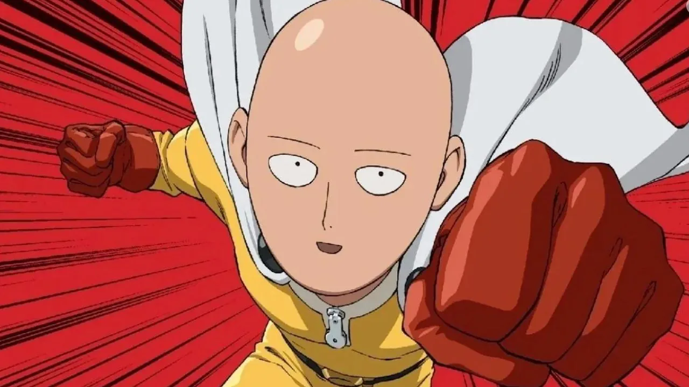
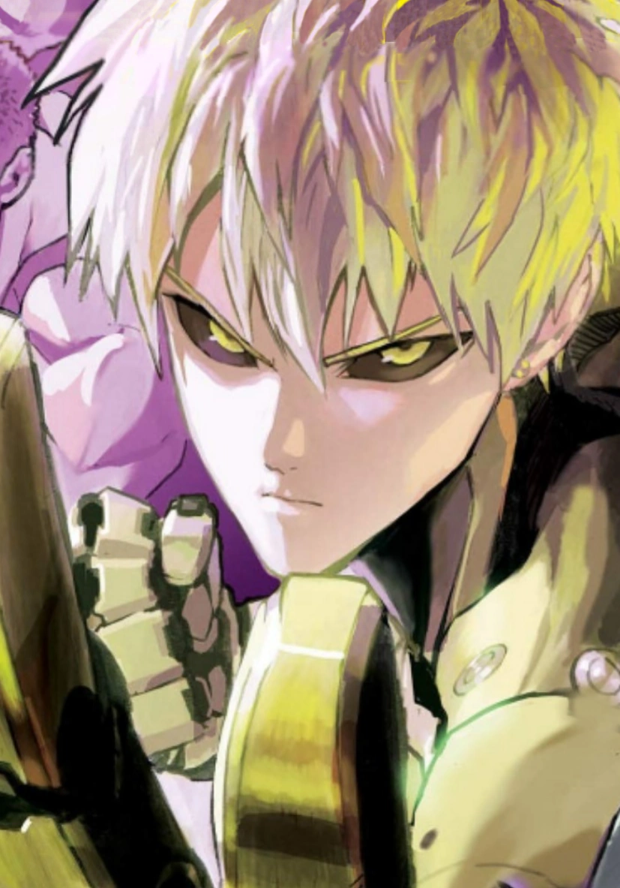

One Punch Man
Año de Lanzamiento: 2009
Año de Estreno: 2015
País de Origen: Japón
Género(s): Acción, Comedia, Ciencia Ficción
Creadores: ONE (webcomic), Yusuke Murata (manga)
Breve Sinopsis: Saitama, un superhéroe calvo,derrota a cualquier enemigo con un solo golpe. Sin embargo, su vida se vuelve monótona debido a su abrumadora fuerza.
Temporadas
One Punch Man tiene 2 temporadas

Personajes Importantes.
| Nombre | Foto | Rol en la Serie |
|---|---|---|
| Saitama |  | El superhéroe más fuerte, pero aburrido por su poder. |
| Genos |  | Cyborg con sed de venganza contra el monstruo que destruyó su vida. |